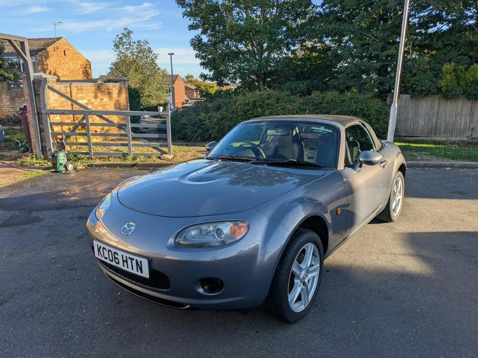
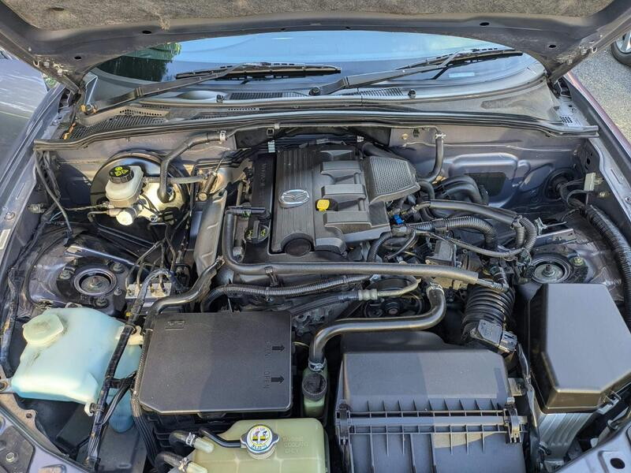
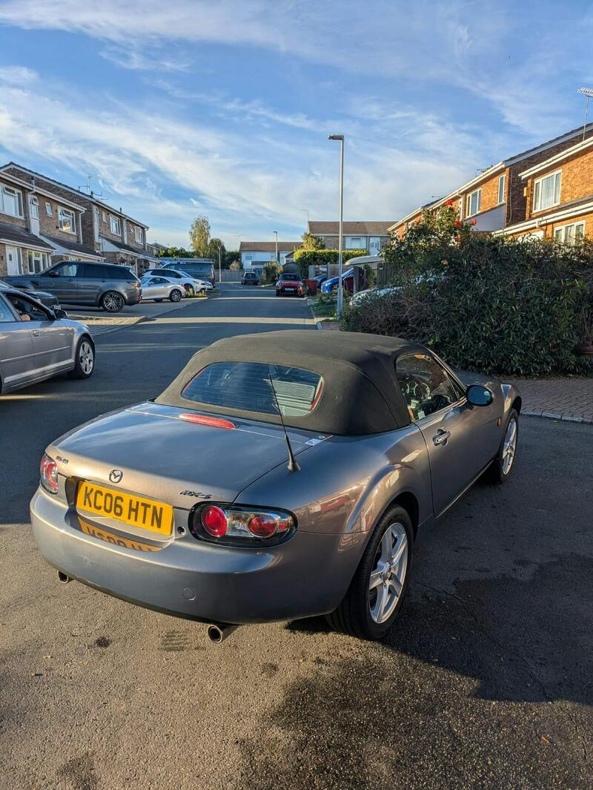
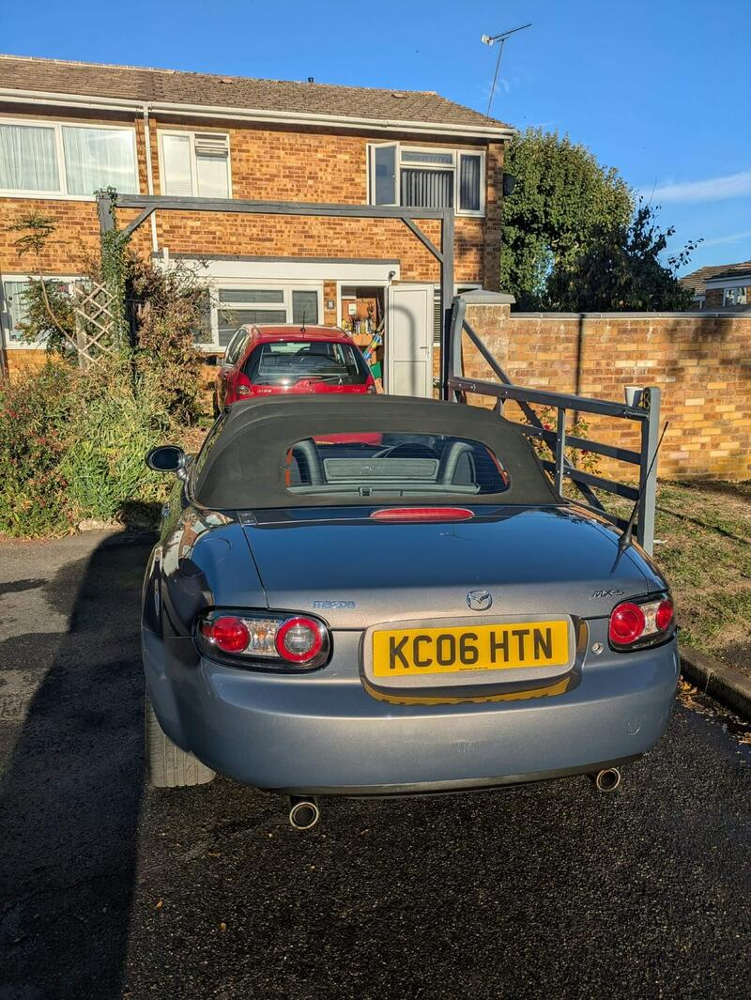

Seller photos from the AutoTrader ad.
Mazda MX-5 1.8i
Rust already dealt with, which is a real plus on an NC.
Key facts
| Price | £2,800 |
|---|---|
| Year | 2006 |
| Miles | 80,800 |
| Model | Mazda MX-5 1.8i |
| Colour | Grey |
| Registration | 2006 (06 reg) |
| Owners | 4 owners |
| Service history | Not stated |
| MOT | Until Dec (ad) |
| Seller | Private |
| Location | Reading |
| From GU7 | 26 mi (AutoTrader) |
| Checked | 13 Oct 2026 |
Why buy it
- Rear sills already welded, new thermostat (ad)
- Faultlessly reliable for 2 years (ad)
Things to check
Sills were welded, so look at the quality of the work
£2,800 ono
- Mazda MX-5 NC / NB weak spots
Rear subframe, rear arches and sill ends; NB sills and chassis rails. Underseal can hide rot. Engine mostly bulletproof; timing-chain tensioner, seizing calipers, rear diff leaks, cracking coolant tank.
Seller says (extract)
“2006 grey mazda mx5 1.8 for sale in Reading, Berkshire Car is in very good condition for its age of 20 years, i bought the car 2 years ago and has been faultlessly reliable; selling due to a long commute and wanting something more comfortable. I do have some paperwork with the vehicle detailed below. 2 keys Bank transfer on purchase 2800 ono 80800 miles MOT till Dec Good bits/ recent work: Welded rear sills, completed after the heat wave in May (no trapped moisture) New thermostatic value (another common mx5 issue when they stick open) Good paintwork for the age and has been detailed New NGK spark iridium spark plugs fitted less than 5k miles ago Cleared softtop draining channels, aswell as a very good roof with no tears or leaks. New catalytic converter…”